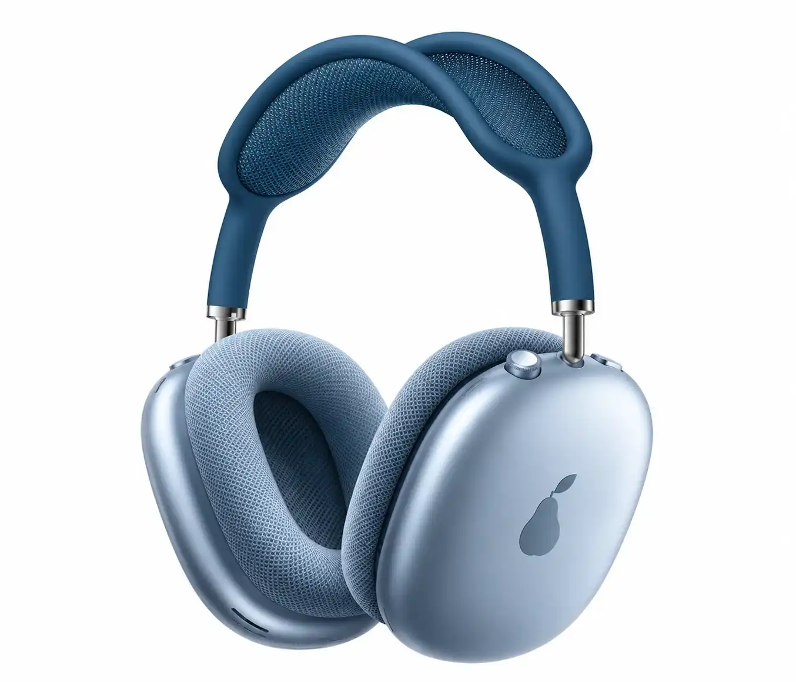

Aluminio y malla
Casquetes de aluminio anodizado y almohadillas de malla que respiran durante horas.
 AirCapots
AirCapots
Presentamos AirCapots One
Minimalismo que se siente. Audio que te transporta.
Descubre la experiencia ↗
Casquetes de aluminio anodizado y almohadillas de malla que respiran durante horas.
Un arco de malla elástica reparte el peso para que olvides que lo llevas puesto.
Un solo dial controla volumen, pausa y llamadas. Sin menús, sin ruido.

Azul cielo